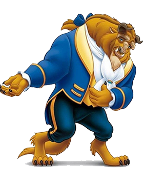
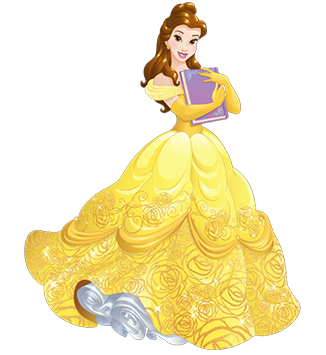
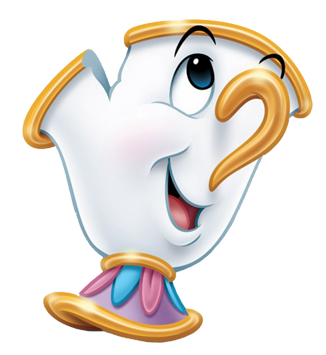

탭 패널
The Beast is a fictional character who appears in Walt Disney Animation Studios' 30th animated feature film Beauty and the Beast (1991). He also appears in the film's two direct-to-video followups Beauty and the Beast: The Enchanted Christmas and Belle's Magical World. Based on the hero of the French fairy tale by Jeanne-Marie Leprince de Beaumont, the Beast was created by screenwriter Linda Woolverton and animated by Glen Keane.
Belle (Belle) is a Walt Disney Pictures' character and the fifth Disney Princess is. It first appeared in the animated film 《Beauty and the Beast》 in 1991 . It was created with motifs from the fairy tale beauty of Gabrielle Susanne de Villeneuve and the beauty appearing in the Beast .
Free postage and packaging on all orders! Due to the perishable nature of our product, we regret that we are unable to ship items internationally at this time. If you would like to find out when Monsieur Pigeon is coming to your country, please sign up for the mailing list.
